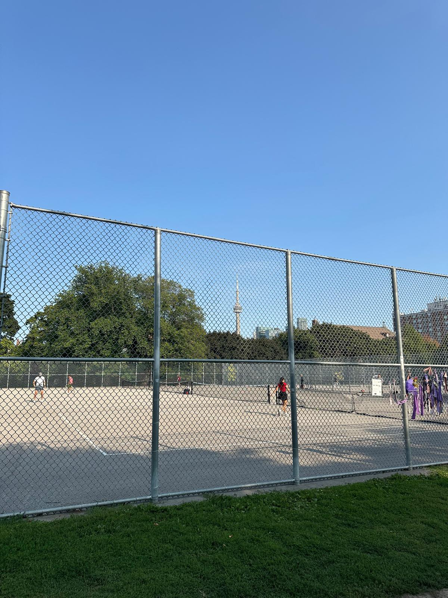
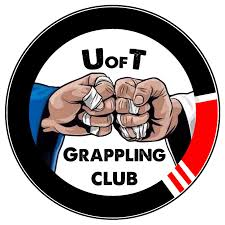

Tennis
I've been playing tennis since middle school. Consequently, it's the sport I'm most passionate about.
From captaining my highschool team to winning my first intramural championship as part of the
engineering team, I will always make tennis an important part of my life.
Favorite player: Ben Shelton
Weight Lifting
The gym has been an important part of my routine since my sophomore year of highschool. Recently I've
been powerlifting more frequently. My main exercise focuses are the barbell bench and squat.
Bench PR: 225 lbs
Squat PR: 185 lbs
Running
I LOVE RUNNING. Been doing it since the beginning of 2025 and improved exponentially.
5k time: 25:32
10k time: 50:12
Jiu Jiutsu
Been grappling since the beginning of 2026. I'm a white belt at the UofT Grappling Club. It's the first time I've put this much effort into a sport other than tennis and I hope to improve and represent UofT at Comps.